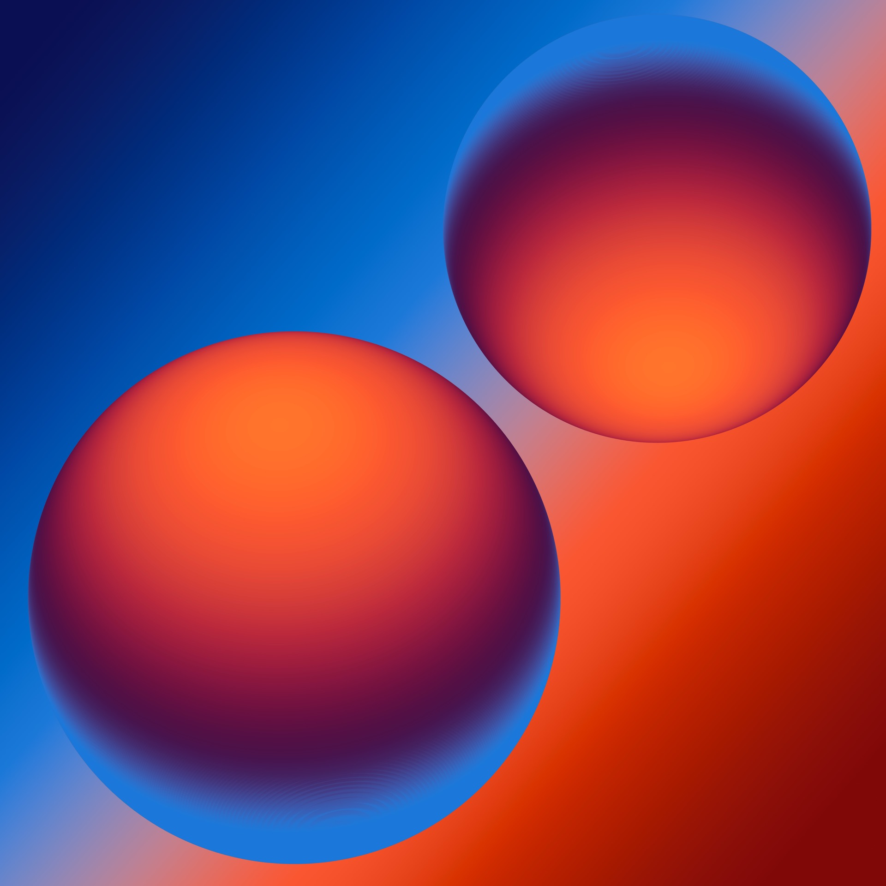

Medical student, inventor, and software builder working across clinical AI, biomedical devices, cold-chain systems, and creative tools.

Don’t just stand there, click something!
stay idle for 10 seconds to see site easter egg